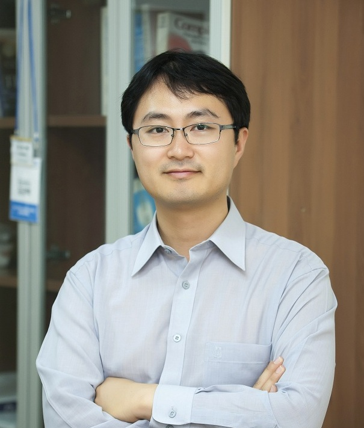

Organizing Committee
-
General Chairs
-
 Nalini
Venkatasubramanian
Nalini
Venkatasubramanian
(UC Irvine, USA)
-
Mahmoud Sakr
(Université libre de Bruxelles, Belgium)
-
Raymond Wong
(Hong Kong University of Science and Technology, China)
-
PC Chairs
-
Ahmed Eldawy
(UC Riverside, USA)
-
Prem
Prakash Jayaraman
(Swinburne University, Australia)
-
Christos Doulkeridis
(University of Piraeus, Greece)
-
Local and Financial Organization Chairs
-
Faisal Nawab
(UC Irvine, USA)
-
Amr Magdy
(UC Riverside, USA)
-
Gilles
Dejaegere
(Université libre de Bruxelles, Belgium)
-
Workshop Chairs
-
Chiara Renso
(ISTI-CNR, Italy)
-
Goce
Trajcevski
(Iowa State University, USA)
-

Kyungbaek Kim
(Chonnam National University, Korea)
-
Tutorial Chairs
-
Karine Zeitouni
(University of Versailles Saint-Quentin, France)
-
 Shantanu Sharma
Shantanu Sharma
(New Jersey Institute of Technology, USA)
-
Cheng-Hsin Hsu
(National Tsing Hua University, Taiwan)
-
Demo Chairs
-
Demetris Zeinalipour
(University of Cyprus, Cyprus)
-
Roger Zimmermann
(National University of Singapore, Singapore)
-
Andreas Züfle
(Emory University, USA)
-
Industry Track Chairs
-
Ashley Song
(Microsoft)
-
Erik Hoel
(ESRI)
-
Jagan
Sankaranarayanan
(Google)
-
Panel Chairs
-
Vassilis Tsotras
(UC Riverside, USA)
-
 Dimitrios Gunopoulos
Dimitrios Gunopoulos
(University of Athens)
-
Takahiro Hara
(Osaka University, Japan)
-
PhD Forum Chairs
-
Qi Han
(Colorado School of Mines, USA)
-
De-Nian Yang
(Institute of Information Science, Academia Sinica, Taiwan)
-
PhD Dissertation Showcase Chairs
-
Anita Graser
(Austrian Institute of Technology, Austria)
-
 Sanjay
Madria
Sanjay
Madria
(Missouri University of Science and Technology, US)
-
Outreach Chairs
-
Indrakshi Ray
(Colorado State University, USA)
-
Evaggelia
Pitoura
(University of Ioannina, Greece)
-
Bruhadeshwar
Bezawada
(Southern Arkansas University, Magnolia)
-
Steering Committee Liaison
-
Panos K. Chrysanthis
(University of Pittsburgh, USA)
-
Sanjay
Madria
(Missouri University of Science and Technology, US)
-
Proceedings Chairs
-
Edison Tsz Nam Chan
(Shenzhen University, China)
-
Renchi Yang
(Hong Kong Baptist University, China)
-
Sponsorship Chairs
-
Shonali
Krishnaswamy
(AiDA Technologies, Singapore)
-
Mrinalini
Lakshminarayanan
(Executive Technology Product and GTM Leadership)
-
WebMasters
-
Yuqiao Li
(UC Irvine, USA)
-
Fazard Habibi
(UC Irvine, USA)
-
 Song
Wu
Song
Wu
(Université libre de Bruxelles, Belgium)
-
Publicity Chairs
-
Georgios Bouloukakis
(Telecom Sud, France)
-
Roberto Yus
(University of Maryland Baltimore County, USA)
-
Christine Bassem
(Wellesley College, USA)
-
Registration Chairs
-
Yusuf
Sarwar
(University of Missouri Kansas City, USA)
-
Ibrahim
Sabek
(USC, USA)